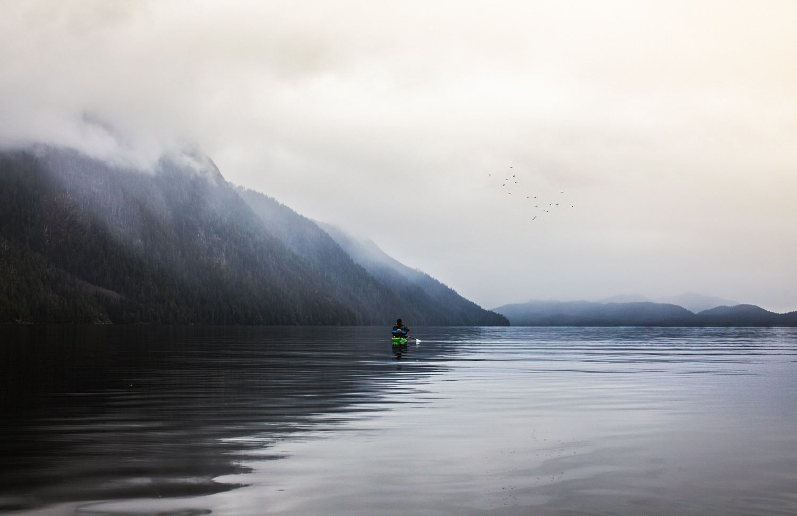

Why “Just Blooming”
A friend once told us about a trip to Jamaica. They saw an older man with a head full of dreadlocks, paddling easily upstream.
Someone on the bank called out, “You’re beautiful!”
He smiled and called back:
“Just blooming.”
That stayed with us. Maybe feeling alive isn’t about fighting age or becoming someone else. Maybe it’s about tending the conditions and letting yourself grow.
